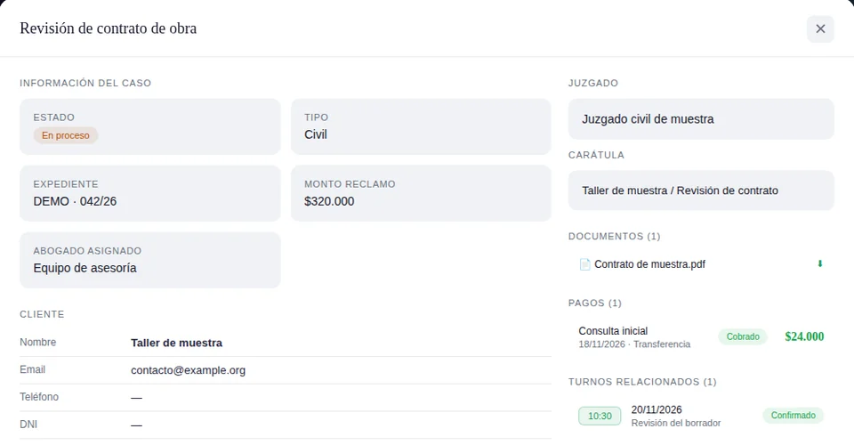

EXP. 01 · Robótica educativa
Robi
Un robot que acompaña los primeros pasos de la lectoescritura. Combina una interfaz de actividades con voz y un personaje que responde durante el ejercicio.
ESCOLAR

Robótica educativa, aplicaciones web y proyectos personales.
6 expedientes · 2 cajones
EXP. 01 · Robótica educativa
Un robot que acompaña los primeros pasos de la lectoescritura. Combina una interfaz de actividades con voz y un personaje que responde durante el ejercicio.
ESCOLAREXP. 02 · Educación · Laravel
Catálogo, inscripción y cursada en una misma aplicación. El recorrido del estudiante llega hasta la emisión del certificado.
ESCOLAR
EXP. 03 · Logística · PHP
El cliente consulta el estado de una entrega. El comercio y el repartidor actualizan el recorrido de cada pedido.
ESCOLAR
EXP. 04 · Gestión jurídica · PHP
Un panel para el trabajo diario de un estudio jurídico. Cada expediente reúne el seguimiento de la causa, sus documentos y sus plazos.
ESCOLAR
EXP. 05 · Domótica · Python
Alarma domiciliaria con panel web y aplicación Android. Un bot de Telegram envía avisos y permite consultar el estado del sistema.
ESCOLAREXP. 06 · Python · En reconstrucción
Agente personal de IA con interfaz web, voz y memoria persistente. Su reconstrucción avanza por fases.
Los fragmentos de SEREN que aparecen en el portfolio están escritos de antemano.